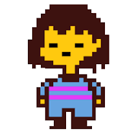

Undertale
La historia principal de Undertale se ubica en el subsuelo, donde existe un reino dominado por monstruos, quienes fueron desterrados de la superficie por los humanos después de una fatídica guerra. El subsuelo fue sellado con una barrera mágica, dividiendo los dos mun- dos para siempre.

toriel
toriel es el personaje que nos acompaña al inicio del juego que nos sirve como figura materna

frisk
frisk es nuestro protagonista principal siendo el septimo niño que cayo en el subsuelo siendo buscado para poder al fin liberar a los mounstros
hola
como estas